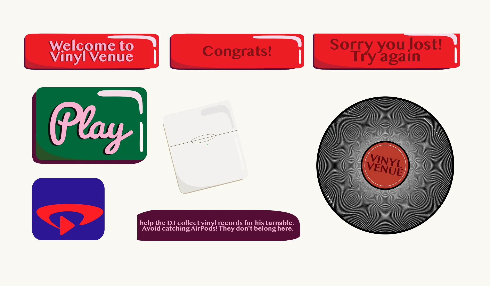

DIGITAL PORTFOLIO
Grundlæggende Animation
I forløbet, Grundlæggende animation, blev vi introduceret til programmeringssproget JavaScript, som kan bruges til at kode dynamiske websites. Vi brugte JavaScript sammen med CSS-animationer til at skabe et spil.
Temaopgave spil
Spillets koncept og idé, skulle vi selv finde på, og vi skulle selv designe alle elementer og kode spillet fra bunden. Vi lærte her om ide-genereringsteknikker, paperprototyper og aktivitetsdiagrammer. Derudover havde vi undervisning i stiltyper, hvor jeg valgte at tage udgangpunkt i stilen, Kawaii. Vedhæftet ses min skitse samt den færdige rentegning i Adobe Illustrator.
Vi lærte også om aktivitetsdiagrammer, som vi brugte til at skabe vores spil i Javascript.